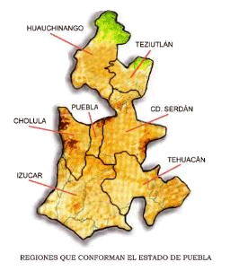
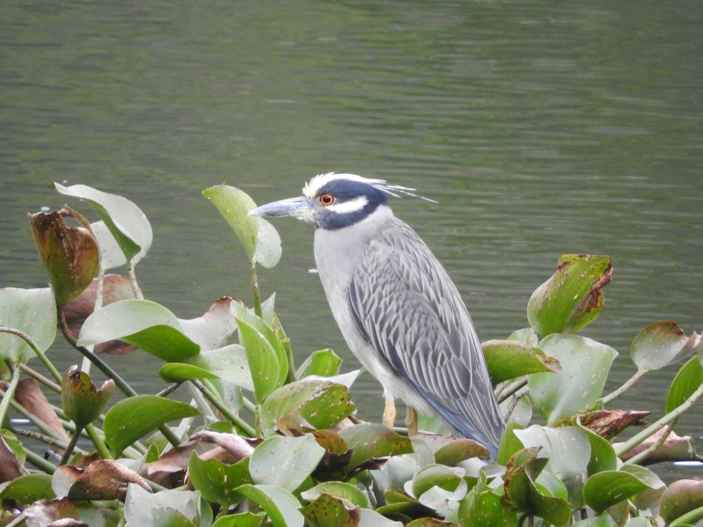

Se encuentra localizado en el km 162 de la carretera México-Tuxpan, aproximadamente a 2 horas de la capital federal, entre los paralelos 20º 10' 51'' de latitud norte y 98º 02' 58'' de longitud oeste del Meridiano de Greenwich, situado en la parte norte del estado de Puebla, y forma parte de la sierra madre oriental, tiene una altitud de 1490 msnm.
Con abundantes ríos y arroyos que descienden de las montañas de la sierra, y con bastos mantos acuíferos que contribuyen al vaso de la presa de Necaxa forman tres vertientes hidrográficas, pero que en los últimos años se han visto afectadas en su nivel por la falta de lluvias en la región.
Su superficie es de 207 km², que representan el 0,61 por ciento del territorio estatal.

FLORA Y FAUNA
Flora
Debido a las condiciones naturales de la región montañosa, se ha desarrollado una morfología vegetal exuberante constituida por diversas especies. Presenta predominio de zonas boscosas, principalmente especies de:
pinos (real y blanco)
encinos
oyamel
ocote
Fauna
Se observan especies como:
Chachalaca Paloma Cardenal Calandria carpinteros clarines chupamirtos dominicos caimanes gorriones jilgueros Golondrina

TRAJE TÍPICO
En varios lugares todavía las mujeres utilizan naguas negras de lana tejida en telar de Cintura, conocidas, como "titixtle" o "enredo". Es importante saber que la dimensión del “titixtle” depende de las posibilidades económicas de la familia, en algunos casos llega a medir de 5 a 10 m. Los pliegues del “titixtle” en la parte del vientre son los días de la semana y cada día que pasa disminuye uno. Esto se complementa con la blusa de manta de escote cuadrado y bordada con figuras de flores o animales, en colores encendidos. Las solteras usan en su indumentaria el color rojo y las casadas el negro. Para sujetar las naguas se utiliza una faja ancha de color rojo. Los listones en las trenzas forman parte del colorido típico, así como los grandes aretes. Usan “quechquemetl” bordado a mano con figuras de flores, conejos, cruces, grecas, pavos, gallos, etc., siempre en colores encendidos. Esta prenda, además de ser una de las más antiguas, contiene algo de místico.
La indumentaria de los hombres es más sencilla y austera: visten calzón largo y camisola de manta, sombrero de palma, huaraches de correa y machete a la cintura. De ser el caso utilizan jorongo o cotorina de lana.